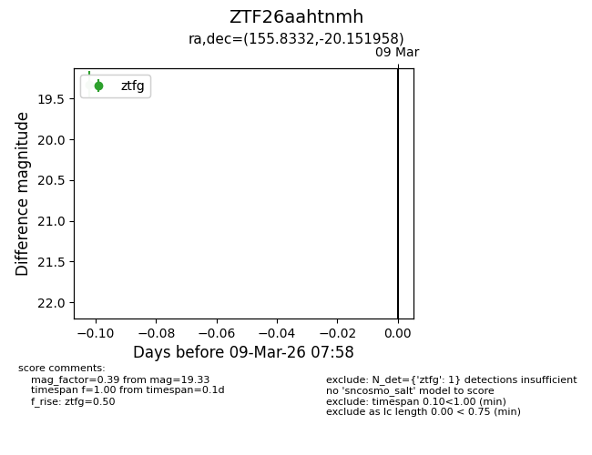
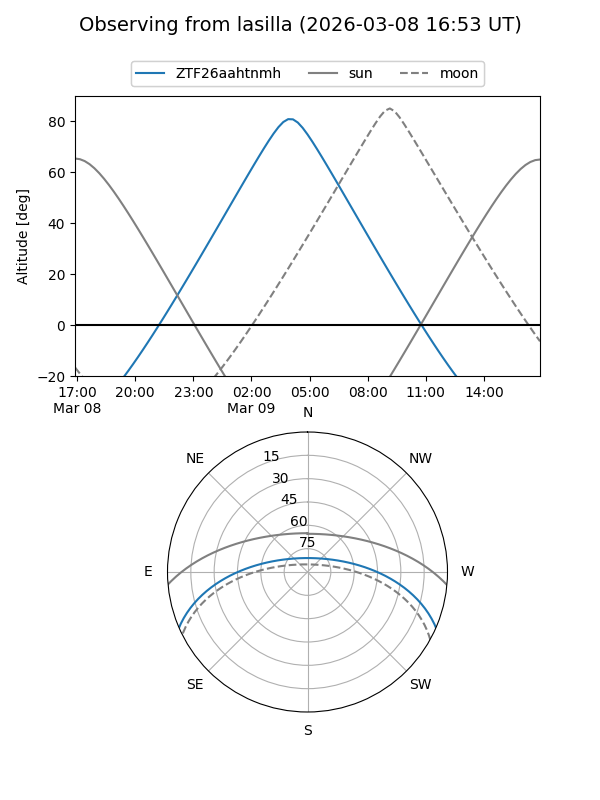
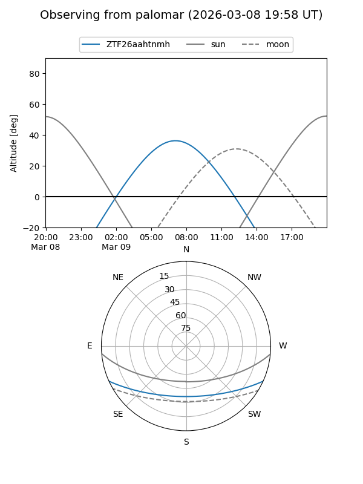

ZTF26aahtnmh
Target ZTF26aahtnmh at 2026-03-09 07:59
Aliases and brokers:
FINK: link
Lasair: link
ALeRCE: link
alt names
ZTF26aahtnmh (ztf,fink_ztf)
Coordinates:
equatorial (ra, dec) = 155.8332,-20.15196
equatorial (HMS+DMS) = 10:23:19.96,-20:09:07.05
galactic (l, b) = (261.8463,+30.65992)
Flags:
Photometry:
last ztfg=19.33
1 ztfg detections
Lightcurve

Visibility


Additional plots